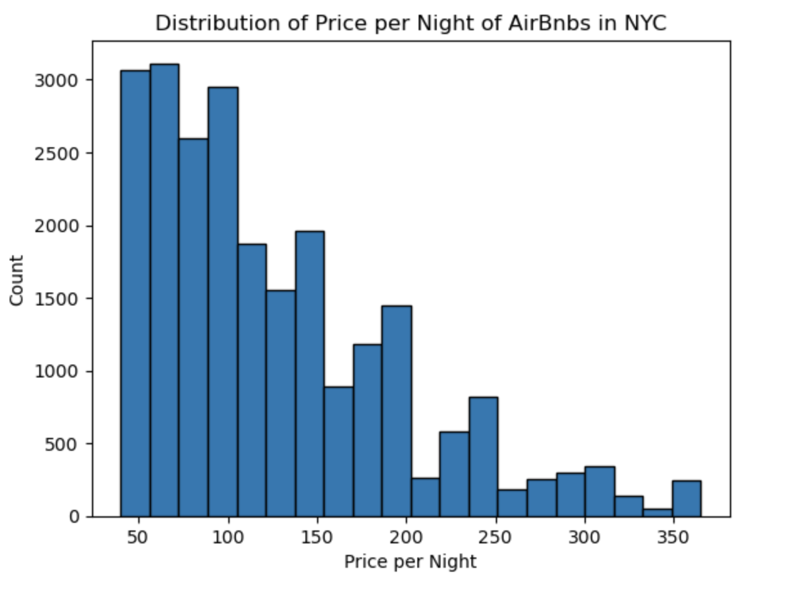
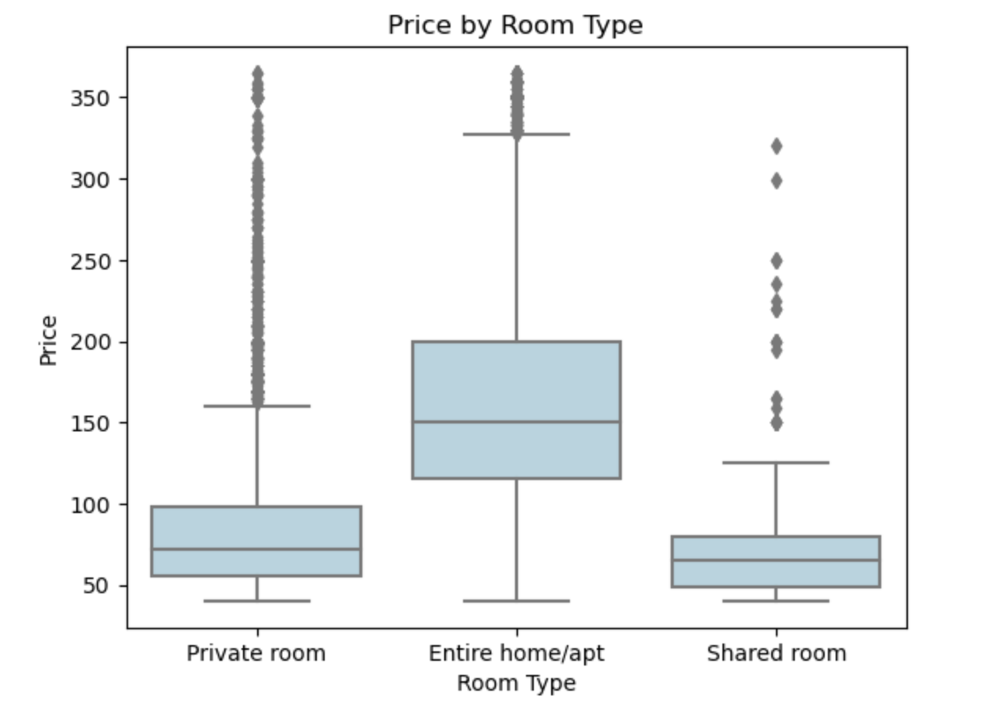

Home Away From Home - Vacation Rental Trends in NYC
Overall Introduction
With the rise of vacation rental sites, such as Airbnb and VRBO, we wanted to investigate factors that influence booking. Using a dataset scraped from Airbnb in 2019, we gain insight into the many components that influence Airbnb popularity in NYC. Our hope is that these trends could be applied to vacation rentals in other major cities in the US and beyond, which could help both guests to book cheaper, better stays and for owners to make higher profits. For example, as an owner, what neighborhoods and types of rentals will be the most successful? As a guest, where can you go to get more bang for your buck?
You can check out current pricing and information on the AirBnb website https://www.airbnb.com/.
Introduction to the Data
Our analysis makes use of two datasets. The first data is a data set called `airbnb_nyc.csv` which contains the following Airbnb statistics for greater New York City in 2019. Kaggle, where the data is publicly available stated “Since 2008, guests and hosts have used Airbnb to expand on traveling possibilities and present a more unique, personalized way of experiencing the world. This dataset describes the listing activity and metrics in NYC, NY for 2019.” The data has 48.9k rows with 16 features, but after dropping null rows, filtering outliers, and removing extraneous columns, our final dataframe had 23.8k rows and 13 columns. An example:
Add screenshot of head of dataset here!
Meanwhile, we also believe that the geographical information is important when evaluating the airbnb data. Therefore, we also make use of geographical information on Zillow and Natural Earth. These websites provides the geographical information for making maps for US states and cities. Zillow and Natural Earth were utilized for the following choropleth map.
Choropleth Map of Airbnb Price by Neighborhood
Our first task was to visually display the spread of Airbnb pricing across different NYC neighborhoods. To examine these differences in Airbnb prices across New York City, we created an interactive choropleth map that displays the average and max prices of Airbnbs in different neighborhoods. Users can interact with the layers of the map and choose to look at either max prices or average prices, comparing the prices via the color scale. By hovering over the neighborhoods, users can see a tooltip with the concrete average or max prices, name, and total number of Airbnbs for the neighborhood.
This interactive plot shows us that the most expensive neighborhoods on average are located in Manhattan, while both Manhattan and Brooklyn have the highest max prices. This finding is in line with what we expected, since these areas are more tourist focused and known to be expensive.
Overview of Airbnb Price Range
To complete our task of discovering general pricing trends and the overall range of prices in Airbnbs, we created a histogram of the total pricing range. We concluded that prices are most commonly $50-$100 a night, with close to 3500 Airbnbs in that exact price range. Typically, the higher the price, the less Airbnbs on the market at that price.

Airbnb Prices in Relation to Rental Type, Neighborhood, and Number of Reviews
Another task we wanted to complete was to compare the pricing of the rental to the room type being offered. We decided to create a boxplot to do this, so that we could easily see the side by side comparison of the maximum, minimum, and average prices of the three room styles: private room, entire home, and shared room. We found through this visualization that renting the entire home is generally the priciest option, followed by private room, leaving shared room as the cheapest option. We could also draw the conclusion that entire homes usually go for about $125 - $200 a night, private rooms for $50 - $100 a night, and shared rooms for $50 - $75 a night.

Moreover, we wanted to evaluate the relationship between average AirBnb prices for the top neighborhoods to stay in. New York City is known to be an expensive destination, but some travelers are willing to pay for the best of the best. Knowing the averages for the top 10 most expensive neighborhoods might also help a vacationer set an intended price range for their own stay. If you want to stay in Neponsit, a quaint and peaceful neighborhood in Rockaway known for prime beach stays, you could expect to spend $275 per night. Perhaps you’re more interested in a classic NYC experience in Greenwich Village. An apartment for a night would usually cost somewhere around $196. In general, someone looking to stay in one of NYC’s top 10 priciest neighborhoods should expect to pay an average of $185 to $275 per night.